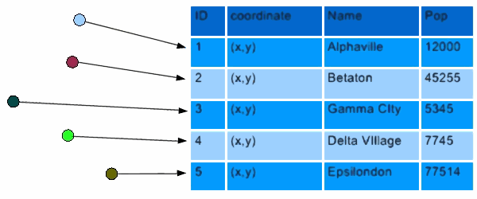
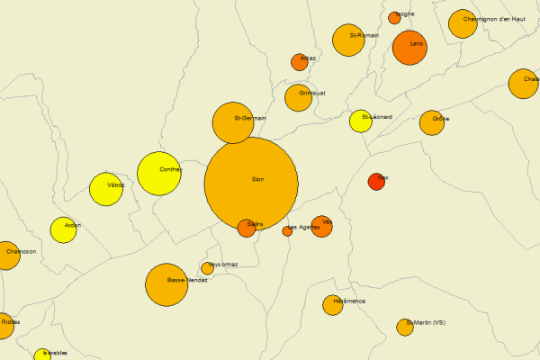
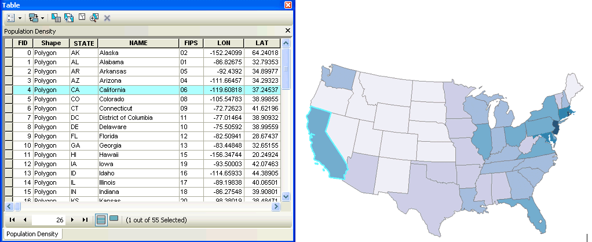
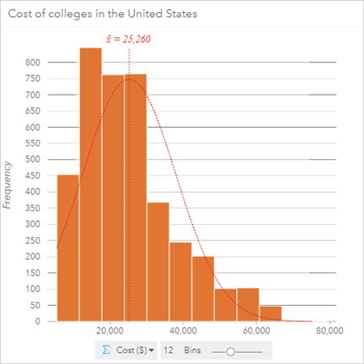
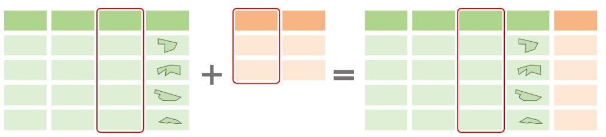
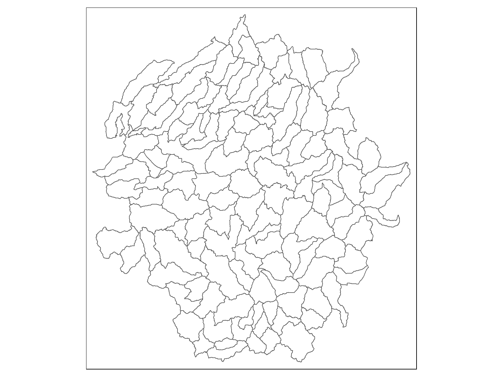
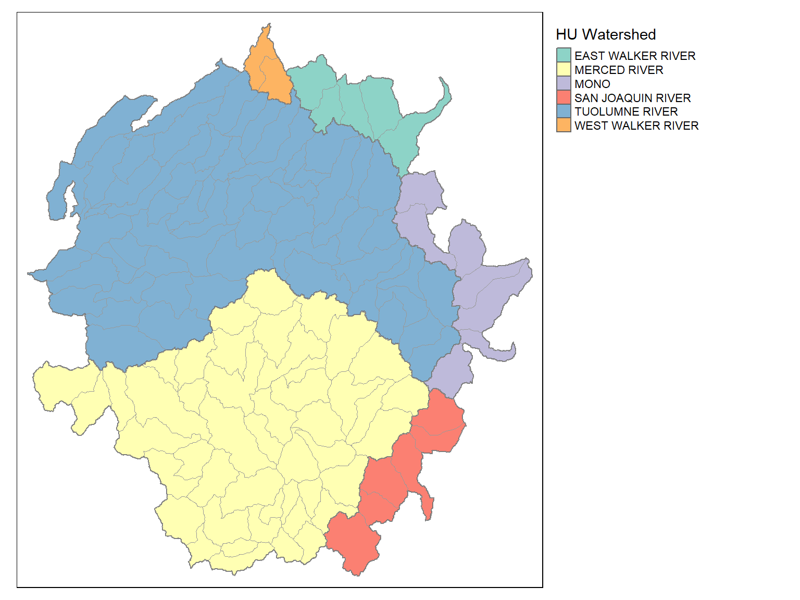
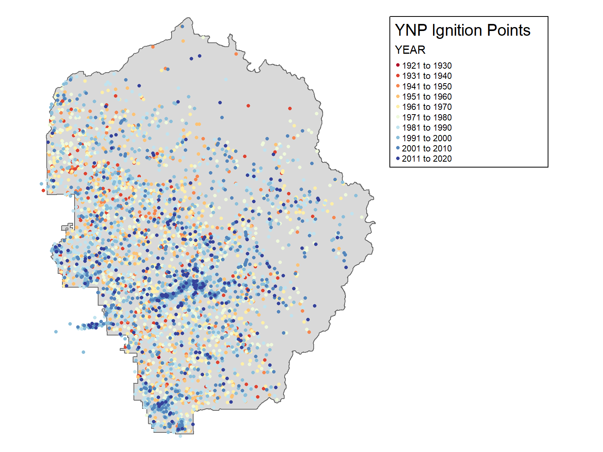

Working with Attribute Tables


Each layer has its own attribute table.
1. Symbology

2. Querying Features

3. Analysis

Before you start working with the attribute table, it helps to understand the data.
First place to check - metadata files that come with the data.
| sf objects are data frames! |
You can use any function from dplyr or base R that works on data frames on sf data frames.
Most dplyr functions will return a sf object
To ‘drop’ the geometry column of a sf object, use st_drop_geometry() (returns a data frame)
To get the values for a single column, use the $ operator or dplyr::pull().
Useful R functions to explore data frames:
View() – popular
names()
summary()
class()
unique()
table()
hist()
query = select features
attribute query = select features by their attribute values
Go-to functions for attribute queries:
dplyr::filter()
dplyr::slice()

To join an attribute table to another data frame based on a common column, you can use:
dplyr::left_join()
dplyr::right_join()
dplyr::inner_join()
Why would you do this?
So you can use the additional columns for:
A common method in data analysis involves grouping rows in a table followed by computing summaries for each group.
This is accomplished in dplyr with
group_by() and
summarise():
library(palmerpenguins)
library(dplyr)
library(tidyr)
penguins |>
tidyr::drop_na() |>
group_by(species, sex) |>
summarize(avg_bill_len = mean(bill_length_mm),
avg_flipper_len = mean(flipper_length_mm))## `summarise()` has grouped output by 'species'. You can override using the `.groups` argument.## # A tibble: 6 × 4
## # Groups: species [3]
## species sex avg_bill_len avg_flipper_len
## <fct> <fct> <dbl> <dbl>
## 1 Adelie female 37.3 188.
## 2 Adelie male 40.4 192.
## 3 Chinstrap female 46.6 192.
## 4 Chinstrap male 51.1 200.
## 5 Gentoo female 45.6 213.
## 6 Gentoo male 49.5 222.
If you use group_by() and summarize() on a sf Data Frame, you’ll get back another SF data frame with:
the attribute values summarized for each group of features (as usual)
the union (aka dissolve) of each group of features as the geometry
Example:
We illustrate this with the attribute table from watersheds layer.
yose_watersheds_sf <- sf::st_read("./data/yose_watersheds.gpkg", layer="calw221")
tm_shape(yose_watersheds_sf) + tm_borders()
## Reading layer `calw221' from data source `D:\Workshops\R-Spatial\rspatial_mod\outputs\rspatial_bgs24\exercises\data\yose_watersheds.gpkg' using driver `GPKG'
## Simple feature collection with 127 features and 12 fields
## Geometry type: POLYGON
## Dimension: XY
## Bounding box: xmin: 1383.82 ymin: -61442.93 xmax: 81596.71 ymax: 26405.66
## Projected CRS: NAD83 / California Albers
The watersheds attribute table has a column “HU” and “HUNAME” which are the id number and name of larger watersheds. To find the number of smaller watersheds in each larger watershed, we can run:
watersheds_df <- yose_watersheds_sf |> st_drop_geometry()
hu_df <- watersheds_df |>
group_by(HU) |>
summarise(HUNAME = first(HUNAME),
NUM_WATERSHEDS = n(),
AVG_ACRES = mean(ACRES))
glimpse(hu_df)## Rows: 6
## Columns: 4
## $ HU <int> 1, 30, 31, 36, 37, 40
## $ HUNAME <chr> "MONO", "EAST WALKER RIVER", "WEST WALKER RIVER", "TUOLUMNE RIVER", "MERCED RIVER", "SAN JOAQUIN RIVER"
## $ NUM_WATERSHEDS <int> 7, 5, 2, 60, 47, 6
## $ AVG_ACRES <dbl> 9311.916, 9385.448, 6426.835, 8128.559, 8399.112, 8911.178The exact same dplyr functions can be used with sf dataframes. The result is another sf object where the groups of features have been unioned together.
hu_sf <- yose_watersheds_sf |>
group_by(HU) |>
summarise(HUNAME = first(HUNAME),
NUM_WATERSHEDS = n(),
AVG_ACRES = mean(ACRES))
hu_sf
## Plot
tm_shape(hu_sf) +
tm_polygons(col="HUNAME", title="HU Watershed") +
tm_shape(yose_watersheds_sf) +
tm_borders(col="gray60", lwd=0.8) +
tm_layout(legend.outside = T)## Simple feature collection with 6 features and 4 fields
## Geometry type: POLYGON
## Dimension: XY
## Bounding box: xmin: 1383.82 ymin: -61442.93 xmax: 81596.71 ymax: 26405.66
## Projected CRS: NAD83 / California Albers
## # A tibble: 6 × 5
## HU HUNAME NUM_WATERSHEDS AVG_ACRES geom
## <int> <chr> <int> <dbl> <POLYGON [m]>
## 1 1 MONO 7 9312. ((70613.55 -24551.79, 70576.82 -24620.61, 70555.84 -24713.47, 70550.74 -24775.76, 70553.5...
## 2 30 EAST WALKER RIVER 5 9385. ((66826.29 17825.42, 66842.88 17853.58, 66861.79 17868.39, 66915.55 17879.66, 66963.11 17...
## 3 31 WEST WALKER RIVER 2 6427. ((41216.82 21006.26, 41275.41 20974.09, 41329.18 20937.78, 41342.79 20896.13, 41363.94 20...
## 4 36 TUOLUMNE RIVER 60 8129. ((23146.17 -25588.36, 23112.63 -25612.56, 23054.77 -25681.3, 23031.97 -25713.11, 23006.08...
## 5 37 MERCED RIVER 47 8399. ((29670.04 -58750.01, 29640.86 -58738.67, 29586.24 -58761.95, 29552.98 -58821.12, 29523.3...
## 6 40 SAN JOAQUIN RIVER 6 8911. ((55704.49 -53548.52, 55754.08 -53648.64, 55792.94 -53706.26, 55849 -53780.87, 55956.66 -...
Goal: Explore the Fire Ignition Points attribute table.
The Yosemite Fire History geodatabase contains a point layer of fire ignition points, and a polygon layer of fire burned areas in YNP, 1930-2016.

Today we saw how to: